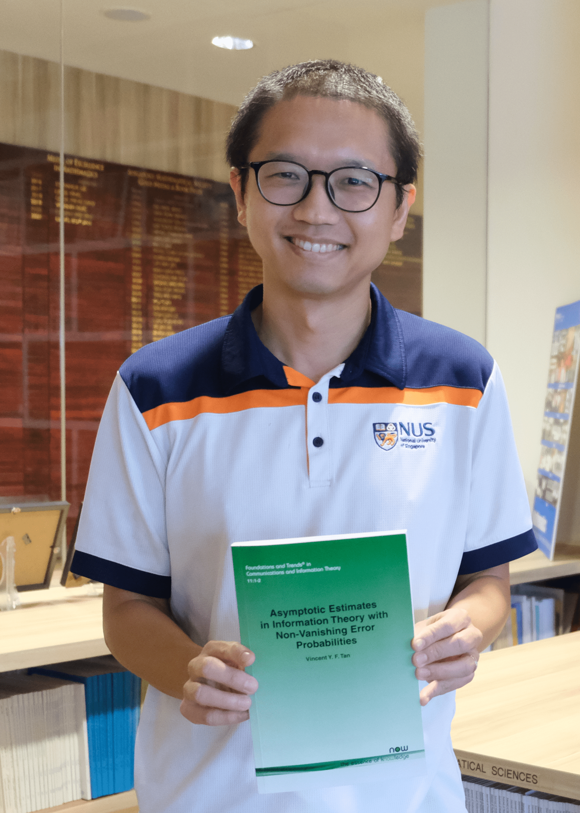

Vincent Y. F. Tan 陈延福 (Pronouns: he/him/his/他)
|  |
Professor,
Affiliate,
Office: S17-05-20 (Mathematics) and E4-06-06 (ECE)
My Curriculum Vitae.
|
News (Archive)
- Advertisement: Looking to hire motivated postdocs. Please see this advertisement for more details.
- Dec 2025: Posted an updated version of a paper with Yujie Liu and Yunbei Xu titled Finite-Time Minimax Bounds and an Optimal Lyapunov Policy in Queueing Control.
- Nov 2025: Paper "On the Exponential Convergence for Offline RLHF with Pairwise Comparisons" accepted to the Alignment Track of AAAI'26 and to be presented as an Oral Presentation. Joint work with former PhD student Zhirui Chen.
- Nov 2025: Congrats to PhD student Yunlong Hou for successfully defending his excellent thesis.
- Nov 2025: Received the Faculty (of Science) Teaching Excellence Award (FTEA).
- Oct 2025: Posted a paper on the arxiv: "Transformers Provably Learn Directed Acyclic Graphs via Kernel-Guided Mutual Information". Joint work with Ph.D. student Yuan Cheng and collaborators Yu Huang, Zhe Xiong, and Yingbin Liang.
- Oct 2025: Appointed as a Senior Area Chair of ICML 2026.
- Oct 2025: Invited to speak at the Learning and Information Theory workshop at EPFL Bernoulli Center in Feb 2026.
- Oct 2025: Invited to speak at the Tenth Van der Meulen Seminar in TU Eindhoven. I will give a talk on recent joint work with Hamdi Joudeh on guessing-based decoding with abandonment.
- Oct 2025: Posted a paper on the arxiv: "Parameter-free Algorithms for the Stochastically Extended Adversarial Model". To be presented at NeurIPS 2025.
- Oct 2025: Posted a paper on the arxiv: "Muon Outperforms Adam in Tail-End Associative Memory Learning".
- Sep 2025: Delivered an invited talk on BanditSpec at RLChina.
- Sep 2025: Paper "Parameter-free Algorithms for the Stochastically Extended Adversarial Model" accepted to NeurIPS 2025. Joint work with current PhD student Shuche Wang, former postdoc Adarsh Barik, and collaborator Peng Zhao. The paper presents new parameter-free algorithms for the Stochastically Extended Adversarial (SEA) model, eliminating the need for pre-determined parameters (such as the Lipschitz constant of the loss function or domain diameter) by leveraging the Optimistic Online Newton Step (OONS) algorithm.
- Sep 2025: Paper "A Sample Efficient Alternating Minimization-based Algorithm For Robust Phase Retrieval" accepted to the IEEE Transactions on Information Theory. Joint work with Adarsh Barik and Anand Krishna.
- Sep 2025: Posted a paper on the arxiv: "Memory Limitations of Prompt Tuning in Transformers". Joint work with Maxime Meyer, Mario Michelessa, and Caroline Chaux.
- Aug 2025: Obtained an MOE AcRF Tier 2 Grant "Online Optimization with Egalitarian and Fairness Constraints" (Direct Cost: $483,740).
- Aug 2025: Gave talks on BanditSpec at Google Deepmind and IISc in Bangalore. Here are the slides and video.
- Aug 2025: Paper "Ensemble-Tight Second-Order Asymptotics and Exponents for Guessing-Based Decoding with Abandonment" accepted to the IEEE Transactions on Information Theory. Joint work with Hamdi Joudeh (TU Eindhoven).
- Aug 2025: Appointed as a Senior Program Committee Member of AAAI 2026.
- Aug 2025: Appointed to the University Teaching Excellence Committee (UTEC). This committee is responsible for selecting the recipients of teaching awards at the university level.
- Jul 2025: Reappointed to the University Promotion and Tenure Committee (UPTC).
- Jul 2025: Paper "Low Tensor-Rank Adaptation of Kolmogorov--Arnold Networks" accepted to the IEEE Transactions on Signal Processing. Joint work with Yihang Gao and Michael Kwok-Po Ng.
- Jul 2025: Paper "On the Convergence of (Stochastic) Gradient Descent for Kolmogorov–Arnold Networks" accepted to the IEEE Transactions on Information Theory. Joint work with Yihang Gao.
- Jul 2025: Posted a paper on the arxiv: "Automatic Rank Determination for Low-Rank Adaptation via Submodular Function Maximization". Joint work with Yihang Gao.
- Jun 2025: Appointed Area Editor of Shannon Theory and Information Measures of the IEEE Transactions on Information Theory.
- Jun 2025: Posted a paper on the arxiv: "Finite-Time Information-Theoretic Bounds in Queueing Control". Joint work with Yujie Liu and Yunbei Xu.
- Jun 2025: Paper "Enhancing Multi-Text Long Video Generation Consistency without Tuning: Time-Frequency Analysis, Prompt Alignment, and Theory" accepted as a best paper to the Building Physically Plausible World Models (WM) workshop at ICML 2025.
- Jun 2025: Posted a paper on the arxiv: "Log-Sum-Exponential Estimator for Off-Policy Evaluation and Learning". To be presented as a spotlight poster at ICML 2025.
- Jun 2025: Posted a paper on the arxiv: "Asymptotically Optimal Linear Best Feasible Arm Identification with Fixed Budget". Joint work with Ph.D. student Jie Bian. To be presented at UAI 2025.
- Jun 2025: Rated 4.7/5.0 for my teaching of EE5137 Stochastic Processes last semester. See some review quotes here.
- Jun 2025: Congrats to PhD student Fengzhuo Zhang for successfully defending his excellent thesis.
- May 2025: Posted a paper on the arxiv: "Best Arm Identification with Possibly Biased Offline Data". Joint work with Le Yang and Wang Chi Cheung. To be presented at UAI 2025.
- May 2025: Posted a paper on the arxiv: "BanditSpec: Adaptive Speculative Decoding via Bandit Algorithms". To be presented at ICML 2025.
- May 2025: Congrats to former PhD student Haiyun He for accepting a position as an Assistant Professor in the IoT Thurst at HKUST Guangzhou!
- May 2025: Congrats to Research Fellow Adarsh Barik for accepting a position as an Assistant Professor in the Computer Science and Engineering (CSE) department at IIT Delhi!
Research Interests and Open Positions
Online Decision Making, Multi-Armed Bandits, Reinforcement Learning
Information Theory with Applications to Machine Learning
Statistical Signal Processing
I am actively recruiting graduate students in the areas of my research interest above. There are various channels to be admitted to NUS including to the Faculty of Science, the College of Design and Engineering, the Institute of Operations Research and Analytics, and the Integrative Sciences and Engineering Programme (Institute of Data Science).
There are also multiple positions for talented postdoctoral scholars. Postdoctoral scholars with strong publication records and showing interest in the above research topics are also encouraged to contact me to check with me if there are available positions. Please see this advertisement as well as this.
Selected Recent Publications
Ensemble-Tight Second-Order Asymptotics and Exponents for Guessing-Based Decoding with Abandonment
Vincent Y. F. Tan and Hamdi Joudeh
IEEE Transactions on Information Theory, Vol. 71, No. 10, Pages 7555 - 7567, Oct 2025Low Tensor-Rank Adaptation of Kolmogorov--Arnold Networks
Yihang Gao, Michael Kwok-Po Ng, and Vincent Y. F. Tan
IEEE Transactions on Signal Processing, Vol. 73, Pages 3107 - 3123, 2025Best Arm Identification with Possibly Biased Offline Data
Le Yang, Vincent Y. F. Tan, and Wang Chi Cheung
Proc. of the 41st Conference on Uncertainty in Artificial Intelligence (UAI), Rio de Janeiro, Brazil, Jul 2025 (AR ≈ 30.7%)Asymptotically Optimal Linear Best Feasible Arm Identification with Fixed Budget
Jie Bian and Vincent Y. F. Tan
Proc. of the 41st Conference on Uncertainty in Artificial Intelligence (UAI), Rio de Janeiro, Brazil, Jul 2025 (AR ≈ 30.7%)BanditSpec: Adaptive Speculative Decoding via Bandit Algorithms [Poster] [Slides]
Yunlong Hou, Fengzhuo Zhang, Cunxiao Du, Xuan Zhang, Jiachun Pan, Tianyu Pang, Chao Du, Vincent Y. F. Tan, and Zhuoran Yang
Proc. of the 42nd International Conference on Machine Learning (ICML), Vancouver, Canada, Jul 2025 (AR ≈ 26.9%)
Selected Older Publications
Common Information, Noise Stability, and Their Extensions
Lei Yu and Vincent Y. F. Tan
Foundations and Trends® in Communications and Information Theory, Vol. 19, No. 2, Pages 107 - 389, 2022Asymptotic Estimates in Information Theory with Non-Vanishing Error Probabilities
Vincent Y. F. Tan
Foundations and Trends® in Communications and Information Theory, Vol. 11, Nos. 1-2, Pages 1 – 184, 2014Time-Division is Optimal for Covert Communication over Some Broadcast Channels [Slides]
Vincent Y. F. Tan and Si-Hyeon Lee
IEEE Transactions on Information Forensics and Security, Vol. 14, No. 5, Pages 1377 - 1389, May 2019Automatic Relevance Determination in Nonnegative Matrix Factorization with the β-Divergence [Slides] [Code]
Vincent Y. F. Tan and Cédric Févotte
IEEE Transactions on Pattern Analysis and Machine Intelligence, Vol. 35, No. 7, Pages 1592 - 1605, Jul 2013A Large-Deviation Analysis of the Maximum-Likelihood Learning of Markov Tree Structures [Slides]
Vincent Y. F. Tan, Animashree Anandkumar, Lang Tong and Alan S. Willsky
IEEE Transactions on Information Theory, Vol. 57, No. 3, Pages 1714 - 1735, Mar 2011